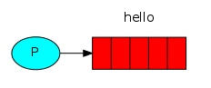

RabbitMQ is a message broker. In essence, it accepts messages from producers, and delivers them to consumers.
Producing means nothing more than sending. A program that sends messages is a producer.
A queue is the name for a mailbox. It lives inside RabbitMQ. Although messages flow through RabbitMQ and your applications, they can be stored only inside a queue. A queue is not bound by any limits, it can store as many messages as you like - it's essentially an infinite buffer. Many producers can send messages that go to one queue - many consumers can try to receive data from one queue.
Consuming has a similar meaning to receiving. A consumer is a program that mostly waits to receive messages.
Sending

public class Send {
private final static String QUEUE_NAME = "hello";
public static void main(String[] argv)
throws java.io.IOException {
...
}
}
then we can create a connection to the server:
ConnectionFactory factory = new ConnectionFactory();
factory.setHost("localhost");
Connection connection = factory.newConnection();
Channel channel = connection.createChannel();
The connection abstracts the socket connection, and takes care of protocol version negotiation and authentication and so on for us.
Next we create a channel, which is where most of the API for getting things done resides.
To send, we must declare a queue for us to send to; then we can publish a message to the queue:
channel.queueDeclare(QUEUE_NAME, false, false, false, null);
String message = "Hello World!";
channel.basicPublish("", QUEUE_NAME, null, message.getBytes());
System.out.println(" [x] Sent '" + message + "'");
Declaring a queue is idempotent - it will only be created if it doesn't exist already.
Receiving

Setting up is the same as the sender; we open a connection and a channel, and declare the queue from which we're going to consume.
Message acknowledgement
In order to make sure a message is never lost, RabbotMQ supports message acknowledgments. An ack is sent back from the consumer to tell RabbitMQ that a particular message has been received, processed and that RabbitMQ is free to delete it.
If a consumer dies without sending an ack, RabbitMQ will understand that a message wasn't processed fully and will re-queue it. If there are other consumers online at the same time, it will then quickly redeliver it to another consumer. That way you can be sure that no message is lost, even if the workers occasionally die.
When RabbitMQ quits or crashes it will forget the queues and messages unless you tell it not to. Two things are required to make sure that meesages aren't lost: we need to make both the queue and messages as durable.
First, we need to make sure that RabbitMQ will never lose our queue. In order to do so, we need to declare it as durable:
boolean durable = true;
channel.queueDeclare("task_queue", durable, false, false, null);
RabbitMQ doesn't allow you to redefine an existing queue with different parameters and will return an error to any program that tries to do that.
At this point we're sure that the task_queue won't be lost even if RabbitMQ restarts. Now we need to make our messages as persistent - by setting MessageProperties to the value PERSISTENT_TEXT_PLAIN.
channel.basicPublish("", "task_queue",
MessageProperties.PERSISTENT_TEXT_PLAIN,
message.getBytes());
RabbitMQ dispatches a mesage when the message enters the queue. It doesn't look at the number of unacknowledged messages for a consumer. It just blindly dispatches every n-th message to the n-th consumer.
In order to defeat that we can use the basicQos method with the prefetchCount = 1 setting. This tells RabbitMQ not to give more than one message to a worker at a time. Or, in other words, don't dispatch a new message to a worker until it has processed and acknowledged the previous one. Instead, it will dispatch it to the next worker that is not still busy.
int prefetchCount = 1;
channel.basicQos(prefetchCount);
The core idea in the messaging model in RabbitMQ is that the producer never sends any messages directly to a queue. Actually, quite often the producer doesn't even know if a message will be delivered to any queue at all.
Instead, the producer can only send messages to an exchange. An exchange is a very simple thing. On one side it receives messages from producers and the other side it pushes them to queues. The exchange must know exactly what to do with a message it receives.
In previous parts of the tutorial we knew nothing about exchanges, but still were able to send messages to queues. That was possile because we were using a default exchange, which we identify by the empty string ("")
channel.basicPublish("", "hello", null, message.getBytes());
A binding is a relationship between an exchange and a queue. This can be simply read as: the queue is interested in messages from this exchange.
Bindings can take an extra routingKey parameter. To avoid the confusion with a basic_publish parameter we're going to call it a bingding key.
channel.queueBind(queueName, EXCHANGE_NAME, "black");
The meaning of a binding key depends on the exchange type. The fanout exchanges simply ignored its value.
The routing algorithm behind a direct exchange is simple - a message foes to the queues whose binding key exactly matches the routing key of the message.
Although using the direct exchange improved our system, it still has limitations - it can't do routing based on multiple criteria.
Messages sent to a topic exchange can't have an arbitrary routing_key - it must be a list of words, delimited by dots. The words can be anything, but usually they specify some features connected to the message. There can be as many words in the routing key as you like, up to the limit of 255 bytes.
The binding key must also be in the same form. The logic behind the topic exchange is similar to a direct one - a message sent with a particular routing key will be delivered to all the queues that are bound with a matching binding key. However there are two important special cases for bing keys:
- * (star) can be substitute for exactly one word
- # (hash) can substitute for zero or more words
Exchanges
- A producer is a user application that sends message.
- A queue is a buffer that stores messages.
- A consumer is a user application that receives messages.
The core idea in the messaging model in RabbitMQ is that the producer never sends any messages directly to a queue. Actually, quite often the producer doesn't even know if a message will be delivered to any queue at all.
Instead, the producer can only send messages to an exchange. On one side the exchange receives messages from producers and the other side it pushes them to queues. The exchange must know exactly what to do with a message it receives.

Temporary queues
Giving a queue a name is important when you want to share the queue between producers and consumers.
Firstly, whenever we connect to Rabbit we need a fresh, empty queue. To do this we could create a queue with a random name.
Secondly, once we disconnect the consumer the queue should be automatically deleted.
发送消息
import java.io.IOException;
import com.rabbitmq.client.ConnectionFactory;
import com.rabbitmq.client.Connection;
import com.rabbitmq.client.Channel;
public class EmitLog {
private static final String EXCHANGE_NAME = "logs";
public static void main(String[] argv)
throws java.io.IOException {
// 新建一个连接工厂
ConnectionFactory factory = new ConnectionFactory();
// 定义连接工厂的host地址（RabbitMQ Server）
factory.setHost("localhost");
// 生成一个新连接
Connection connection = factory.newConnection();
Channel channel = connection.createChannel();
// 设定指定exhange的消息发送格式
channel.exchangeDeclare(EXCHANGE_NAME, "fanout");
String message = getMessage(argv);
// 对exchange发送消息
channel.basicPublish(EXCHANGE_NAME, "", null, message.getBytes());
System.out.println(" [x] Sent '" + message + "'");
channel.close();
connection.close();
}
//...
}
接收消息
import com.rabbitmq.client.*;
import java.io.IOException;
public class ReceiveLogs {
private static final String EXCHANGE_NAME = "logs";
public static void main(String[] argv) throws Exception {
ConnectionFactory factory = new ConnectionFactory();
factory.setHost("localhost");
Connection connection = factory.newConnection();
Channel channel = connection.createChannel();
channel.exchangeDeclare(EXCHANGE_NAME, "fanout");
// 生成一个queue
String queueName = channel.queueDeclare().getQueue();
// 将这个queue绑定到指定的exchange上去
channel.queueBind(queueName, EXCHANGE_NAME, "");
System.out.println(" [*] Waiting for messages. To exit press CTRL+C");
Consumer consumer = new DefaultConsumer(channel) {
@Override
public void handleDelivery(String consumerTag, Envelope envelope,
AMQP.BasicProperties properties, byte[] body) throws IOException {
String message = new String(body, "UTF-8");
System.out.println(" [x] Received '" + message + "'");
}
};
channel.basicConsume(queueName, true, consumer);
}
}